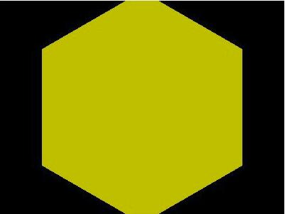
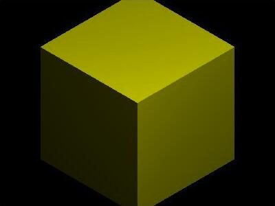
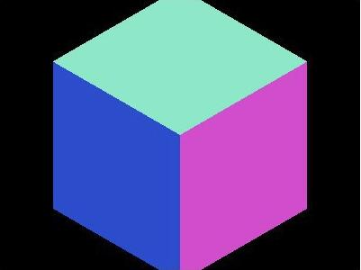
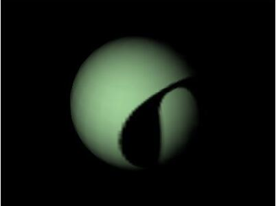
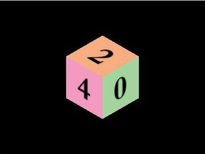

材质 Material
材质是独立于物体顶点信息之外的与渲染效果相关的属性
通过设置材质可以改变物体的颜色、纹理贴图、光照模式等
-
基本材质 MeshBasicMaterial(options)
使用基本材质的物体，渲染后物体的颜色始终为该材质的颜色，而不会由于光照产生明暗、阴影效果
如果没有指定材质的颜色，则颜色是随机的

-
Lambert材质 MeshLambertMaterial()
符合Lambert光照模型的材质，主要特点是只考虑漫反射而不考虑镜面反射的效果
适合大部分物体的漫反射效果，但不适合金属、镜子等需要镜面反射效果的物体

-
Phong材质 MeshPhongMaterial()
符合Phong光照模型的材质，漫反射部分和Lambert光照模型相同，另外考虑了镜面反射的效果
尤其适合对金属、镜面的表现

-
法向材质 MeshNormalMaterial()
将材质的颜色设置为其法向量的方向，对于调试非常有用
在调试时，要知道物体的法向量，使用法向材质就很有效
照相机在不同位置进行观察时的颜色变化：


导入图像作为纹理贴图，而不是使用单一颜色作为材质
-
单张图应用于长方体

-
单张图应用于球体

-
六张图应用于长方体

-
重复贴图的纹理